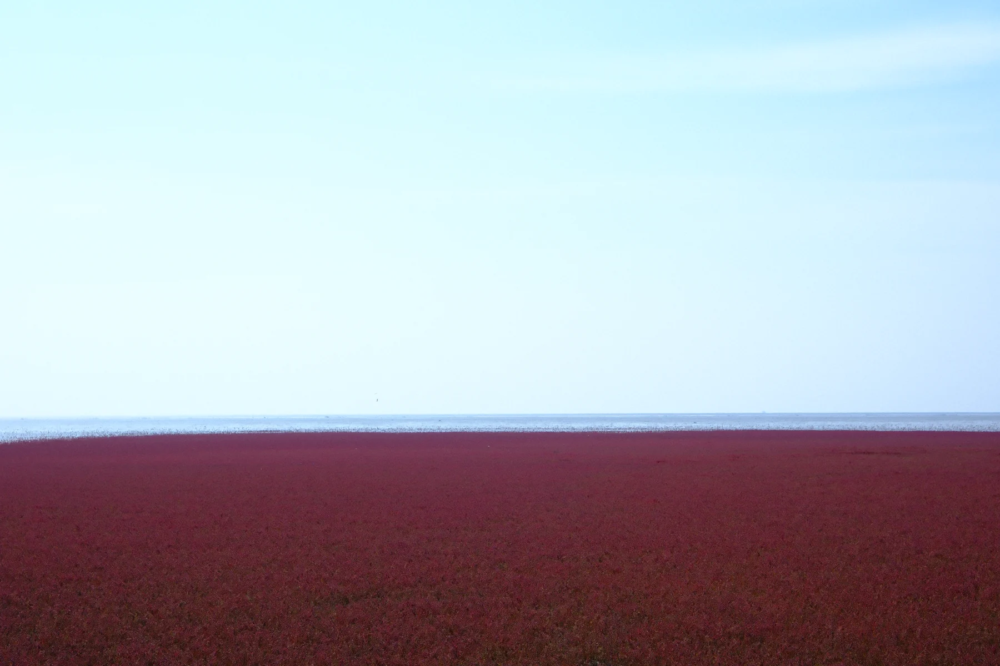
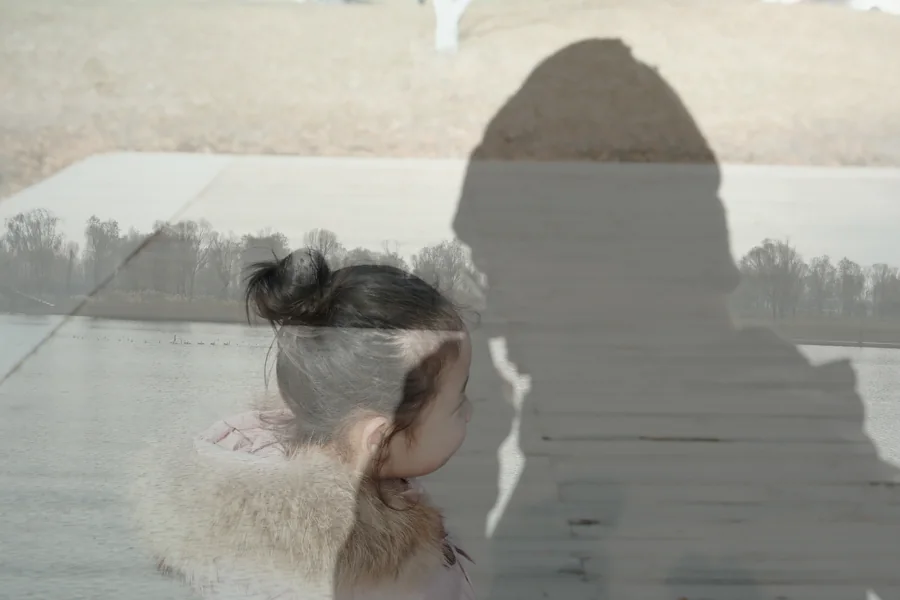
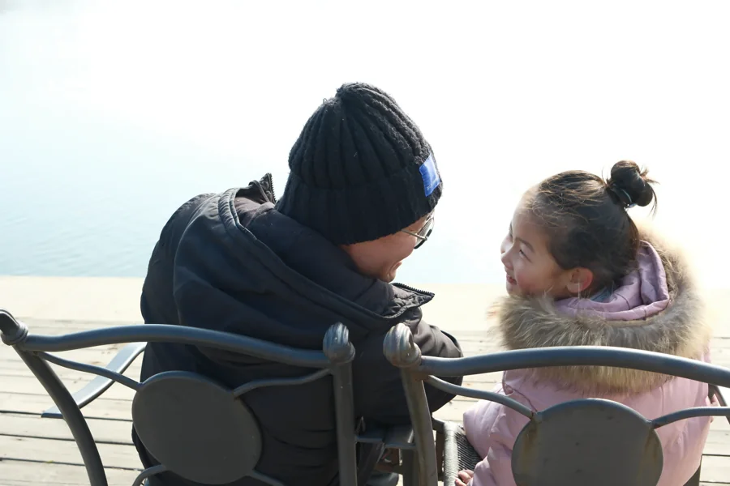
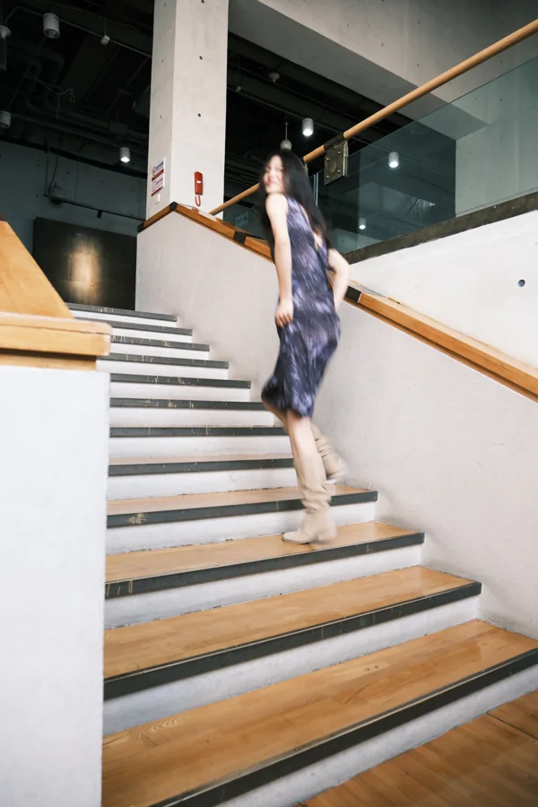
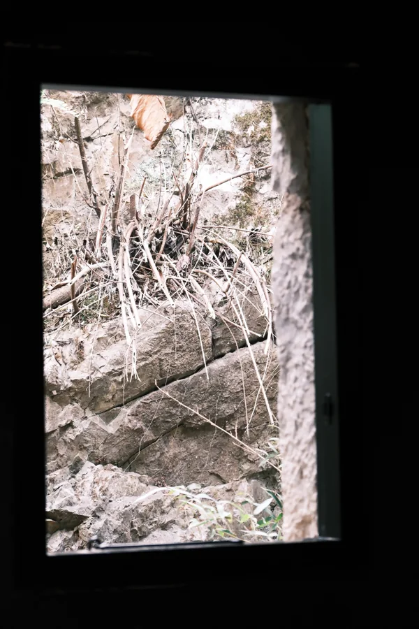

A personal exhibition / 摄影手记
从远方，到身旁。
在辽阔处出发，
在细微处停留。61 PHOTOGRAPHS · 04 CHAPTERS

观看的路径
风景 → 人文 → 光影 → 人像
THE EXHIBITIONLand & distance / 09 works
风景先看见远方。
海天的边界，山野的呼吸。
目光从辽阔处出发。


田野与石巷 / 沿途的风景
{kind=link}
{kind=link}
{kind=link}
Life & encounters / 23 works
人文走进生活之中。
走过田间与街巷，靠近平凡日子。
那些笑声，让风景有了温度。
在日常的缝隙里


游乐，永远是彩色的


亲密的距离


风里的童年 / 露营日记


湖畔的童年 / 七个晴日片刻
{kind=link}
{kind=link}
{kind=link}
{kind=link}
{kind=link}
{kind=link}

{kind=link}

岁月欢聚 / 生日记忆


Light & form / 10 works
光影等一束光经过。
光照亮的，也是暗处留下的。
在窗格、回廊与倒影之间停一停。

光落之处有光的地方，
也有安静。LIGHT, AND THE SILENCE
AROUND IT.
光，塑造空间


身影与重叠


{kind=link}

{kind=link}

People & intimacy / 19 works
人像最后，回到目光。
一场相逢，一次回望。
镜头的终点，是身旁的人。
窗光肖像 / 五个片刻


海风经过的时候


相逢 / 婚礼记忆


在路上的笑容 / 草原与花田
{kind=link}
{kind=link}
{kind=link}
家的温度 / 六幅亲密日常


家庭手记 / 两幅拼贴


写在日常的页边把很小的瞬间，
留得久一点。NOTES ON EVERYDAY LIFE
BEHIND THE LENS
我看见的，
也想让你看见。
我是 Felix。拍摄旅途、自然光下的人像，
以及日常里值得留下的片刻。
照片是一次停留。
也是多年以后，重新靠近一个瞬间的方式。
LET’S CREATE SOMETHING TO REMEMBER
下一个故事，从这里开始。
人像摄影 / 品牌影像 / 图片使用咨询
liufei109@163.com ↗